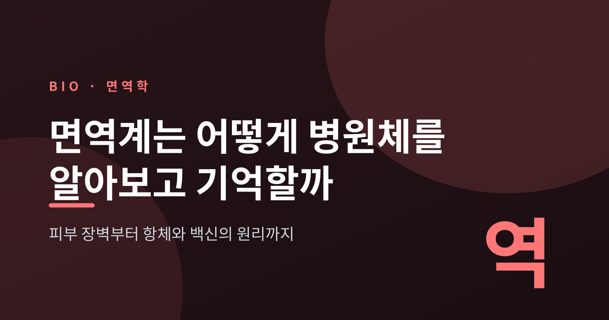
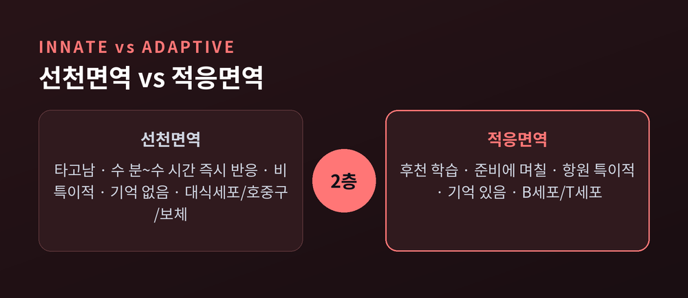
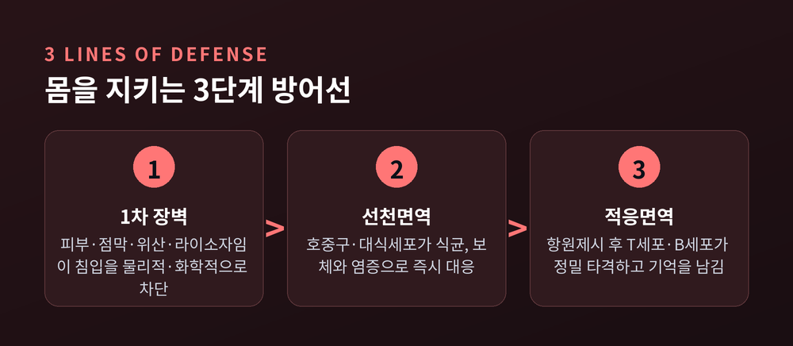
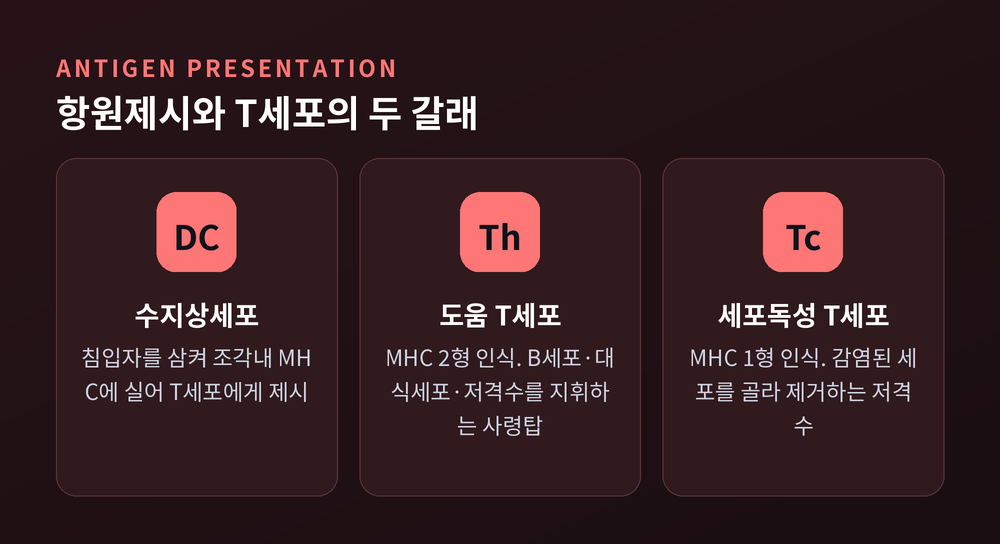
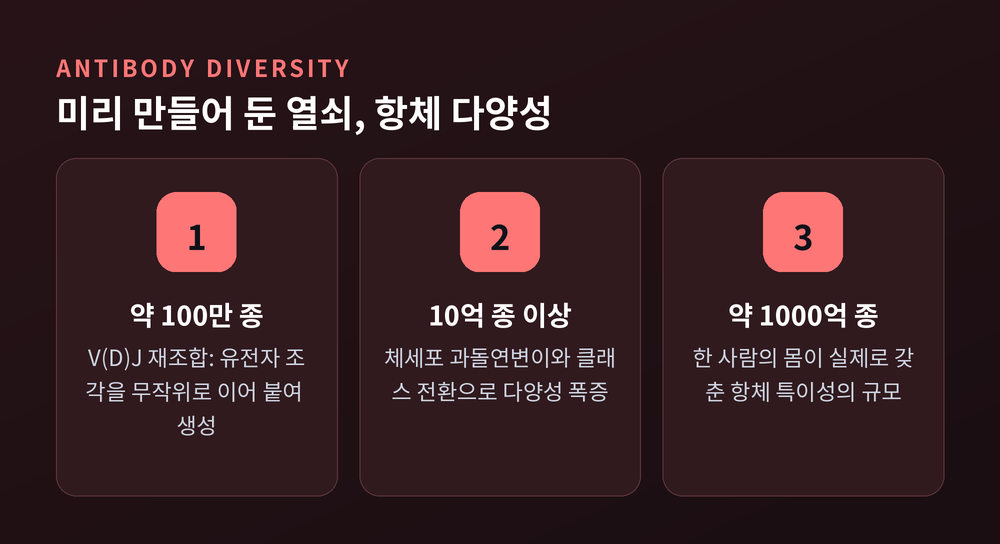
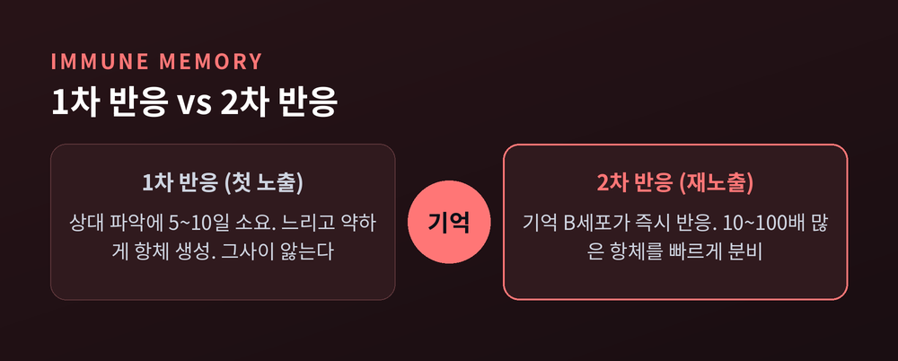

면역계 원리, 몸은 어떻게 병원체를 알아보고 기억할까

감기가 낫고 나면 같은 감기에는 잘 걸리지 않습니다. 한 번 앓은 병을 몸이 기억하기 때문입니다. 이번 글에서는 우리 몸이 병원체를 어떻게 알아보고, 어떻게 물리치고, 어떻게 기억하는지를 순서대로 정리해 보겠습니다. 피부라는 담장에서 시작해, 항체라는 열쇠 꾸러미와 백신의 원리까지 이어집니다.
먼저 큰 그림부터 봅니다. 면역은 크게 두 층으로 되어 있습니다. 타고나는 선천면역과, 살면서 배우는 적응면역입니다. 선천면역은 태어날 때부터 갖춰져 있고, 침입자를 대체로 똑같이 취급합니다. 감염 몇 분에서 몇 시간 안에 곧바로 움직입니다. 대신 지난 일을 기억하지 못합니다. 적응면역은 다릅니다. 특정 병원체 하나를 정확히 겨냥하고, 한번 겪은 상대를 기억합니다. 다만 준비에 며칠이 걸립니다.
몸이 적과 아군을 가르는 원리는 의외로 단순합니다. 우리 몸의 세포는 표면에 'MHC 1형'이라는 신분증을 답니다. 이 신분증이 있으면 '내 편', 없거나 낯설면 '외부'로 봅니다. 면역은 자기 자신으로 인식하지 않는 모든 것을 대상으로 삼습니다.

■ 첫 번째 담장 — 피부와 점막
가장 바깥에서 몸을 지키는 것은 세포도, 항체도 아닌 피부입니다. 촘촘히 맞물린 상피세포가 벽을 이루고, 맨 바깥층은 케라틴을 품은 죽은 세포들로 덮여 있습니다. 케라틴은 물을 밀어내 표면을 건조하게 만듭니다. 세균이 자라기 어려운 환경입니다. 게다가 각질은 끊임없이 떨어져 나가면서, 위에 붙은 세균까지 함께 데리고 나갑니다.
입·코·장처럼 바깥과 통하는 안쪽 통로는 점막이 지킵니다. 끈끈한 점액이 미생물을 붙잡고, 섬모라는 미세한 털이 한 방향으로 물결치며 이물질을 밖으로 밀어냅니다. 우리가 기침하고 재채기하는 순간, 이 방어가 작동하는 셈입니다.
화학 장벽도 촘촘합니다. 위에서는 강한 위산이 삼켜진 병원체를 녹이고, 침과 눈물 속 라이소자임은 세균의 세포벽을 잘라 무너뜨립니다. 담장 하나만 있는 게 아니라, 여러 겹이 겹쳐 있는 것입니다.
■ 담장이 뚫리면 — 선천면역의 즉각 대응
상처로 담장이 뚫리면, 선천면역 세포들이 곧장 출동합니다.
가장 먼저 도착하는 것은 호중구입니다. 혈액 속에 가장 많은 백혈구이고, 세균을 통째로 삼켜 소화합니다. 대신 오래 살지 못하고 금방 소모됩니다. 그 뒤를 대식세포가 받칩니다. 조직에 오래 머무는 청소부로, 싸움이 끝난 뒤에도 남아 잔해와 죽은 세포를 치웁니다. 세포를 통째로 삼키는 이 과정을 식균작용이라 부릅니다.
혈액 속 단백질 무리인 보체도 함께 움직입니다. 보체는 미생물의 막에 구멍을 뚫고, 표면에 달라붙어 '여기 먹어라'는 표식을 남기며, 염증을 일으켜 지원군을 부릅니다. 대식세포가 내뿜는 사이토카인이라는 신호 물질은 더 많은 세포를 불러 모읍니다. 붉게 붓고 열이 나는 염증은, 사실 몸이 총력전을 벌이고 있다는 신호입니다.

■ 맞춤 반격의 시작 — 항원제시와 MHC
선천면역이 시간을 버는 동안, 적응면역은 '맞춤형' 무기를 준비합니다. 그 출발점이 항원제시입니다.
수지상세포가 주인공입니다. 이 세포는 침입자를 삼켜 잘게 부순 뒤, 그 조각을 MHC라는 접시에 담아 T세포에게 내밉니다. 알려진 유일한 임무가 'T세포에게 적의 얼굴을 보여주는 일'일 만큼, 이 일에 특화된 세포입니다.
여기서 접시는 두 종류입니다. MHC 2형은 삼킨 외부 항원을 담아 도움 T세포에게 보이고, MHC 1형은 세포 안에서 만들어진 항원을 담아 세포독성 T세포에게 보입니다. 바이러스에 감염된 세포는 MHC 1형에 바이러스 조각을 얹어 '나는 감염됐다'고 스스로 신고하는 셈입니다.
T세포는 신중합니다. 아무 신호에나 움직이지 않습니다. MHC-항원 결합이라는 신호 하나와, 공동자극이라는 두 번째 신호가 모두 있어야 비로소 활성화됩니다. 아군을 오인 사격하지 않으려는 안전장치입니다.

■ 사령탑과 저격수 — T세포, 그리고 항체를 만드는 B세포
도움 T세포는 적응면역의 사령탑입니다. 거의 모든 적응면역 반응에 관여합니다. B세포를 자극해 항체를 뽑아내게 하고, 대식세포의 살상력을 끌어올리며, 세포독성 T세포를 전장으로 내보냅니다.
세포독성 T세포는 저격수입니다. MHC 1형에 실린 항원을 알아보고, 바이러스에 점령당한 세포를 골라 제거합니다. 병든 세포를 통째로 정리하는 방식입니다.
한편 B세포는 무기 공장입니다. 병원체의 일부를 알아보면 항체를 대량으로 찍어냅니다. 항체는 침입자에 달라붙어 무력화하는 열쇠입니다. 이때 B세포는 생식중심이라는 훈련소에 들어가, 항체 유전자에 돌연변이를 일으키고(체세포 과돌연변이), 더 잘 달라붙는 것만 골라 남기며(친화도 성숙), 상황에 맞게 항체 종류를 바꿉니다(클래스 전환).
놀라운 것은 그 다양성의 규모입니다. 우리 몸은 V·D·J라는 유전자 조각을 레고처럼 무작위로 이어 붙여 항체를 설계합니다. 이 재조합만으로 약 100만 종의 항체가 나옵니다. 여기에 돌연변이와 종류 전환이 더해지면 10억 종을 넘어섭니다. 실제 한 사람의 몸이 갖춘 항체 특이성은 어림잡아 1,000억 종에 이릅니다. 처음 보는 어떤 침입자가 와도 맞는 열쇠를 미리 준비해 둔 셈입니다.

■ 몸이 기억한다 — 면역 기억과 백신
적응면역의 진짜 힘은 '기억'에 있습니다.
처음 겪는 병원체에 대한 1차 반응은 느립니다. 몸이 상대를 파악하는 데 시간이 걸려, 항체가 정점에 오르기까지 대략 5일에서 10일이 필요합니다. 그사이 우리는 앓습니다.
그런데 같은 적이 다시 오면 이야기가 달라집니다. 1차 반응 때 만들어진 기억 B세포가 남아 있기 때문입니다. 이들은 이미 훈련을 마친 정예라, 재노출 시 훨씬 빨리 분열하고 더 정교한 항체를 쏟아냅니다. 그 양이 처음보다 10배에서 100배에 이릅니다. 예전엔 며칠을 앓았다면, 지금은 알아채기도 전에 정리되는 것입니다.

백신은 바로 이 기억을 인위적으로 심는 기술입니다. 병을 일으키지 않는 항원 조각만 몸에 보여 줍니다. 몸은 가볍게 1차 반응을 거치며 기억세포를 남기고, 정작 앓지는 않습니다. 나중에 진짜 병원체가 침입하면, 몸은 이미 겪은 적처럼 곧장 2차 반응으로 대응합니다. 한 번도 걸린 적 없는 병에 미리 면역을 갖게 되는 원리입니다.
정리하면 이렇습니다. 우리 몸은 담장으로 막고, 즉시 반격하고, 맞춤 무기로 정밀 타격한 뒤, 그 경험을 기억으로 남깁니다. 네 단계가 층층이 맞물려 하나의 방어망을 이룹니다.
완벽하지는 않습니다. 이 정교한 시스템이 자기 몸을 공격하면 자가면역질환이 되고, 반응이 지나치면 알레르기가 됩니다. 그럼에도 지금 이 순간에도, 보이지 않는 곳에서 이 방어망은 쉬지 않고 돌아갑니다.
— 면역이란 결국, 몸이 스스로를 지키기 위해 평생에 걸쳐 써 내려가는 기록입니다.